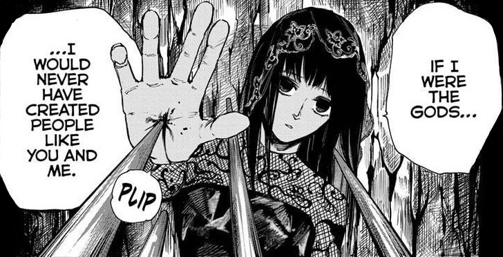

| Descrição Pessoal |
| Idade |
21 |
| Gênero |
Mulher |
| Altura |
175 centímetros |
| Peso |
55kg |
| Cor de cabelo |
Preto |
Habilidades
- Nível geral de habilidade
- Como membro da Ordem e um dos assassinos mais fortes da JAA, Osaragi é um combatente altamente qualificado e poderoso. Ela poderia facilmente igualar e matar Dump, um serial killer de classificação A que matou 180 pessoas até aquele ponto, e foi capaz de derrubar facilmente os principais subordinados de Kashima sem problemas.
- Força Aprimorada
- Apesar de sua estrutura esbelta, Osaragi tem uma força incrível, sendo capaz de golpear a cabeça de Dump em uma estátua de pedra, com força suficiente para quebrá-la, bem como balançar sem esforço uma mala descrita por Dump (que é bastante forte) como sendo "pesada". ". Durante a luta de Osaragi com Dump, um chute do primeiro foi facilmente capaz de destruir uma estátua e fazer sua cabeça voar contra a última. Osaragi também poderia usar sua serra circular para cortar vários portões torii enquanto cortava Dump.
- Durabilidade Aprimorada
- Osaragi foi capaz de saltar do topo de uma rodovia e pousar no fundo sem problemas. Ela também é indiferente à dor, mostrou uma expressão imperturbável após ser empalada na mão por uma das lanças de Dump ou quando enfiou a mão mais fundo na ponta para agarrar o assassino sem desconforto visível. Ela foi esfaqueada várias vezes pelo guarda-chuva da Gueixa depois de ficar imobilizada sem sofrer nenhum dano.
Equipamentos
- Buzzsaw dobrável
- A arma principal de Osaragi é uma mala aparentemente comum que, ao entrar em combate, pode se abrir para revelar uma enorme serra circular com cabos cortados que ela pode manejar com incrível facilidade. Apesar de aparentemente não ter energia, a serra circular ainda é incrivelmente letal. Osaragi também demonstrou ser capaz de usar os cabos cortados para arremessar a serra como um mangual, até mesmo deixando-a envolver objetos para atingir inimigos de ângulos imprevisíveis.
Voltar
